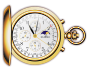
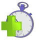
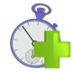
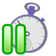
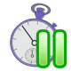

| Normal clock
| Like normal game clock.
No time is added during the game.
|

| Addition before
| Before
a player has made his move, a specified time increment is added to his
clock. Time can be accumalated (remaining time can increase). Works
like Fischer chess clock invented by Bobby Fisher.
|

| Addition after
| After a player makes his move, a specified increment will be added. Called also Fischer after.
|

| Delay
| When
player's turn begins, the clock waits for the delay period before
starting to subtract from player's time. Time is not accumalated. If
player moves within the delay period, no time is substracted.
|

| Delay after
| The
specified increment is added after the move. Like delay, the time is
not accumalated: if player has moved faster than the time increment,
only the exact amount of time expended by the player is added. Called
also Bronstein delay , invented by David Bronstein.
|
| Hour glass
| Every
second the first player uses to think is substracted from his clock and
added to his opponent's clock. Game ends when difference between used
times reaches the specified amount.
|